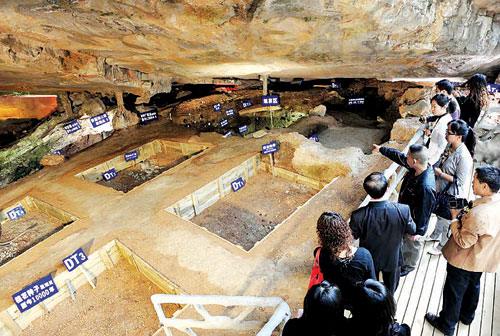
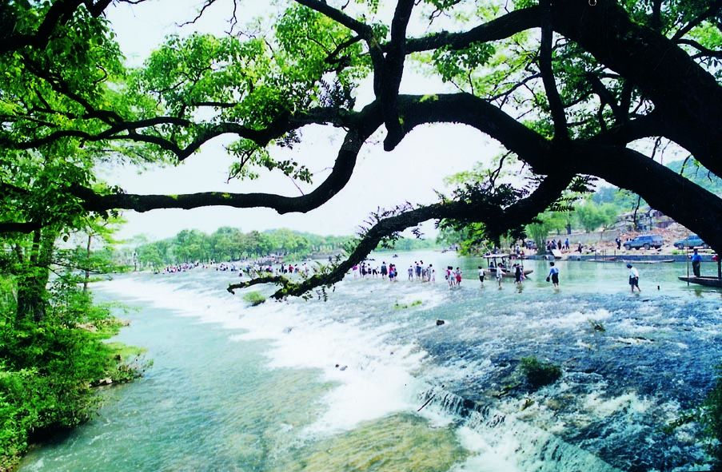
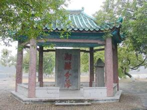
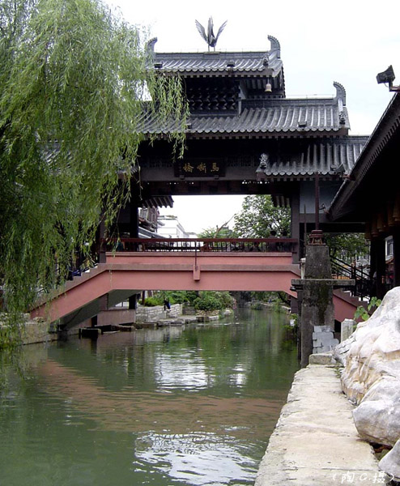
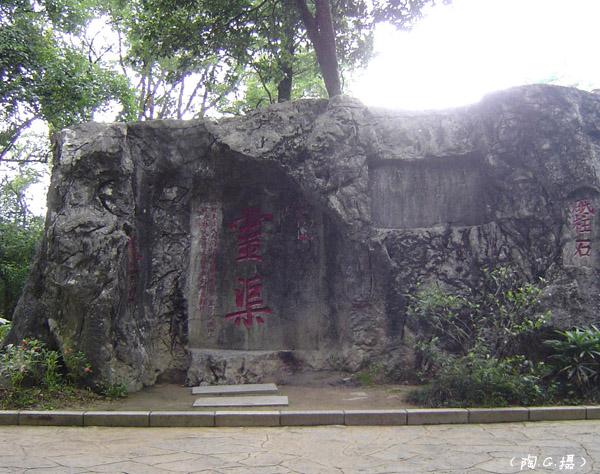
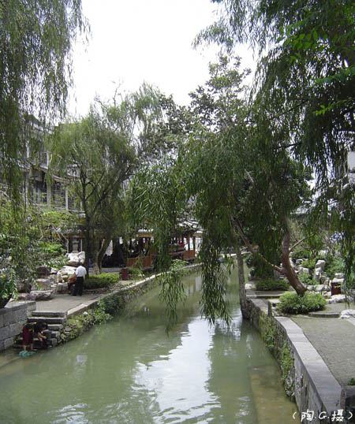

桂林历史悠久。据市区宝积岩和甑皮岩洞穴发现的遗物考证，距今约一万年前，桂林就有人类祖先活动。夏、商、周时期，桂林是“百越”人的居住地。公元前214年秦始皇开凿灵渠，沟通湘、漓二水后，桂林便成为“南连海域，北达中原”的重镇。“桂林”之名，始于秦代，秦始皇置桂林、象、南海三郡，桂林郡因当地盛产玉桂而成名，这是“桂林”名称的最早起源，但郡治不在今天的桂林市。西汉元鼎六年（公元前111年），在今桂林设始安县，隶属荆州零陵郡。东汉时改属始安侯国。三国时先属蜀，后归吴。甘露元年（265年），置始安郡始安县，郡县治所都在今之桂林。隋唐时属岭南桂州总管府。唐武德四年（621年），李靖修城于独秀峰南，贞观八年（634年）改名临桂县，属桂州始安郡，光化三年（900年）始，属静江节度。五代十国时先后属楚和南汉的桂州。宋时，前属广南西路桂州，后属静江府。元时属广西行中书省静江路。明清时均属广西省桂林府。民国时属广西省，1914年改名桂林县，1940年始设桂林市，1944年11月至1945年7月28日，为日寇占领，光复后仍为广西省辖市，民国历史上长期为广西省会。
1949年11月22日桂林解放，为广西省辖市，1958年改称广西壮族自治区桂林市，辖桂林城区和郊区。1981年7月、1983年10月阳朔县、临桂县分别划归桂林市管辖，1996年12月26日经国务院批准，桂林实施部分区划调整，将郊区更名为雁山区，1998年9月8日经国务院批准，桂林市和桂林地区合并，组建新的桂林市，辖秀峰、叠彩、象山、七星、雁山、临桂6个区，阳朔、灵川、临桂、全州、兴安、永福、灌阳、龙胜、资源、平乐、恭城10个县（自治县）及荔浦市。
|  |  |  |
| 国家考古遗址公园- 甑皮岩 | 灵渠 | 灵渠-湘漓分派 |
|  |  |  |
| 灵渠 | 灵渠 | 灵渠 |